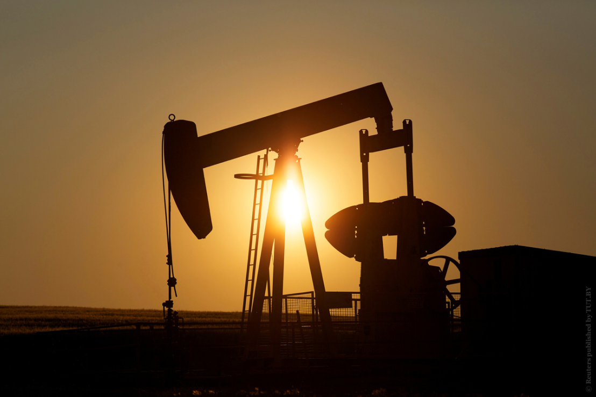

-
«Кузбассразрезуголь» внедряет уникальные технологии транспортировки
«Кузбассразрезуголь» (входит в структуру УГМК) успешно провел запуск уникального для угледобывающей отрасли страны мобильного комплекса, предназначенного для транспортировки экскаваторов в автономном режиме.03.10.2021 -
Природные ресурсы в арктике
 На побережье моря Лаптевых, Восточно-Сибирского и Чукотского морей известны россыпи касситерита.К значительным арктическим местам добычи минералов относятся Дог Майн (цинк и свинец).01.09.2021
На побережье моря Лаптевых, Восточно-Сибирского и Чукотского морей известны россыпи касситерита.К значительным арктическим местам добычи минералов относятся Дог Майн (цинк и свинец).01.09.2021 -
Нефтедобыча
Нефть известна человечеству с древнейших времён. Раскопками на берегу Евфрата установлено существование нефтяного промысла за 6000—4000 лет до н. э. В то время её применяли в качестве топлива, а нефтяные битумы — в строительном и дорожном деле.21.08.2021 -
Золотой запас России по итогам января 2020 года
Многие люди задаются вопросом, какие сейчас существуют страны — лидеры по добыче золота. Золотодобыча в мире ведется уже несколько тысяч лет. Первыми государствами, которые стали добывать драгметалл, были Аккад и Шумер.31.06.2021 -
редкоземельные элементы
Как правило, редкоземельные элементы встречаются в природе совместно. Они образуют весьма прочные окислы, галоидные соединения, сульфиды. Для лантаноидов наиболее характерны соединения трёхвалентных элементов.22.06.2021
новости из мира науки
читайтите последние новости